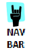

<mat-sidenav-container [hasBackdrop]="false">
  <mat-toolbar
    class="example-toolbar"
    *ngIf="Router.url !== '/login' && Router.url.indexOf('invites') < 0"
    [ngClass]="isExpanded? 'toolbar-shrinked' : ''"
  >

    <div *ngIf="email">
      <span> Bread / Crumb / Example </span>
    </div>
    <mat-icon
      id="toggle-button"
      *ngIf="showSideBarItems()"
      (click)="isExpanded = !isExpanded; toggleButton()"
      >keyboard_arrow_right</mat-icon
    >

    <span class="example-fill-remaining-space"></span>
    <flag class="langFlag" [code]="'br'" [size]="'lg'"  [effect]="'round'"></flag>
    <mat-select class="select-language" (selectionChange)="emitLanguageChange()">
      <mat-option class="mat-option-flag" *ngFor="let lang of languages" [value]="lang">
        <flag [code]="lang" [size]="'lg'"  [effect]="'round'"></flag>
      </mat-option>
    </mat-select>
    <div>
      <span class="top-span" id="name-span">{{ name! }}</span>
      <span class="top-span" id="email-span">{{ email! }}</span>
    </div>
    <button
      mat-icon-button
      [matMenuTriggerFor]="menu"
      aria-label="Example icon-button with a menu"
    >
      <mat-icon id="more-vert">more_vert</mat-icon>
    </button>
    <mat-menu #menu="matMenu">
      <button mat-menu-item (click)="logOut()">
        <mat-icon>exit_to_app</mat-icon>
        <span>Log Out</span>
      </button>
    </mat-menu>
  </mat-toolbar>

  <mat-sidenav #sidenav class="example-sidenav" mode="side"
    [opened]="Router.url == '/'"
    *ngIf="Router.url !== '/login' && Router.url.indexOf('invites') < 0"
  >
    <mat-nav-list class="sidenav-items" style="padding: 0">
      <a mat-list-item (click)="redirectToSelected('companies')" class="logo-item">
        
        </a>

      <mat-divider class="mat-divider" style="margin: 0"></mat-divider>

      <div *ngIf="showSideBarItems()">
        <a *ngFor="let item of sidebarItems" mat-list-item matTooltipPosition="right" class="icons-side-bar"
          [matTooltip]="!isExpanded ? item.label : ''"
          [ngClass]="{'item-menu-active': item.isActive}"
          (click)="redirectToSelected(item.link)"
          [style.display]="item.show ? '': 'none'"
        >
          <mat-icon mat-list-icon>{{ item.icon }}</mat-icon>
          <p matLine *ngIf="isExpanded">{{ item.label }}</p>
        </a>
      </div>
    </mat-nav-list>
  </mat-sidenav>

  <div
    class="example-sidenav-container"
    [ngClass]="isExpanded? 'shrinked-content' : 'normal-content'"
  >
    <router-outlet></router-outlet>
  </div>
</mat-sidenav-container>
